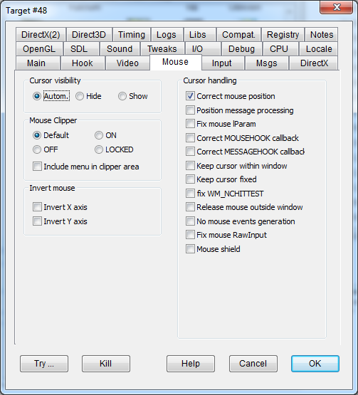

|
Automatic |
Clears any forced cursor visibility settings. |
|
|
Hide |
HIDEHWCURSOR |
Forces hiding the hardware cursor. |
|
Show |
SHOWHWCURSOR |
Forces showing the hardware cursor. |
|
Default |
Default behaviour, DxWnd does not interfere with the program clipping operation apart from the needed coordinate scaling. |
|
|
ON |
CLIPCURSOR |
DxWnd forces the bounding of the cursor within the main window through a GDI clipper. The clipper is then destroyed and rebuilt in case of window lose / gain focus events so that it doesn't interfre with operations on the window border or on other windows, for instance when Alt-tabbing. |
|
OFF |
SUPPRESSCLIPPING |
DxWnd inhibits the bounding of the cursor within the main window bypassing the creation of a GDI clipper. |
|
LOCKED |
CLIPLOCKED |
Same as ON, but never releasing the clipper. |
|
Include menu in clipper area |
CLIPMENU |
If flag is set and the window has a menu, extend the mouse clipper area to allow reaching the menu. Implementation is partial: doesn't take into account multi-line menus or menus that are not positioned on the top of the window client area, but it seems good for most cases. |
|
Correct mouse position |
MODIFYMOUSE |
Compensate for X,Y mouse coordinates when the window is moved or resized. It should be typically set for most games. |
|
Position message processing |
MESSAGEPROC |
Some programs get the current mouse position via the dedicated GetCursorPos API, but others analyze the POINT coordinates that are includes in every window message the program receives. This flag enables a Windows hook that receives messages and compensates for windowed mode's displacement of mouse coordinates by adjusting them to the equivalent fullscreen coordinates. |
|
Fix mouse lParam |
FIXMOUSELPARAM |
The flag forces coordinate scaling in the lParam word of mouse-related Windows messages that are received through PeekMessage calls. It currently fixes the polish release of "Leisure Suit Larry 7: Love for Sail" only. |
|
Correct MOUSEHOOK callback |
FIXMOUSEHOOK |
Fixes "Jagged Alliance 2" mouse problems. |
|
Keep cursor within window |
KEEPCURSORWITHIN |
Avoid moving the cursor outside the window area. This was used as a “Cursor OFF” directive in some games. |
|
Keep cursor fixed |
KEEPCURSORFIXED |
Inhibits the SetCursorPos() API. In some cases, it affects the program's behavior (e.g. the game Necrodrome). |
|
Fix WM_NCHITTEST |
FIXNCHITTEST |
Fixes the WM_NCHITTEST message X,Y coordinates. When the window's border behaves strangely, set this flag to correct the position of the mouse cursor. |
|
Release mouse outside window |
RELEASEMOUSE |
Normally, when the mouse is placed outside the window and the window keeps receiving mouse messages, the mouse cursor is placed on the corresponding window border and the program performs video scrolling or so forth. There are some cases in which you don't want this to happen: for instance, when you want to alternate between two programs, such as a game and a keyboard simulator. Checking this flag causes DxWnd to detect the "mouse outside window" condition, and in this case it places the cursor right in the middle of the screen, where it is supposed to cause no harm. |
|
No mouse events generation |
NOMOUSEEVENTS |
Useful for the game "The Italian Job". Corrects the undesirable effect of sending clicks here and there, easily intercepted by other programs and producing an incredible chaos on the desktop! |
|
Fix mouse RawInput |
FIXMOUSERAWINPUT |
scales X,Y coordinates retrieved from mouse devices in RawInput mode |
|
Mouse shield |
MOUSESHIELD |
Disables the handling of mouse move messages that are sent to window not currently active |